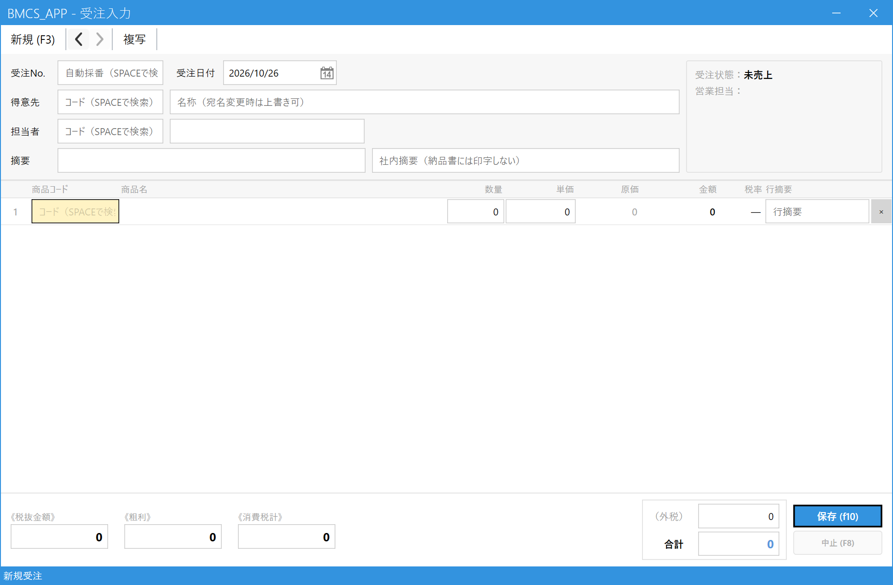
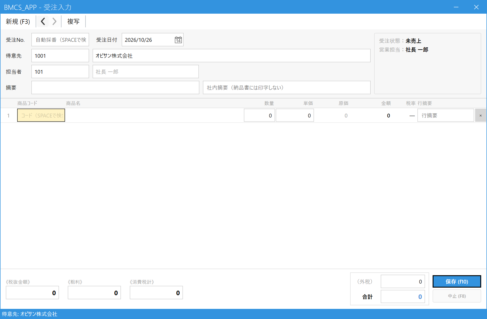
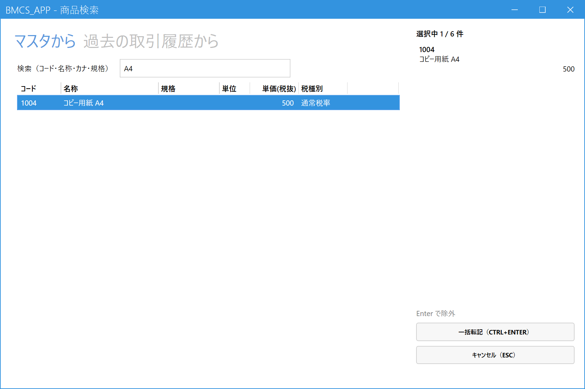
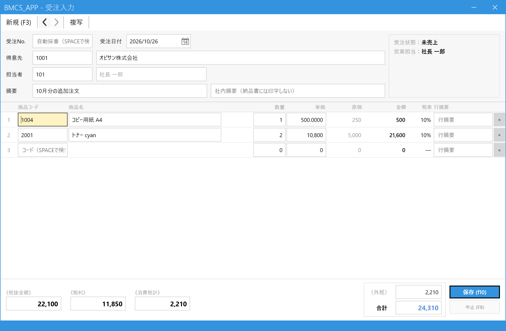

Register an Order
When a customer places an order, first record it as a "provisional slip (order)".
No sale or billing is created at this point. When the goods are ready and you deliver them, call up the order in Sales Entry (売上登録) and turn it into a sale.
Estimated time: 1 to 2 minutes per order once you are used to it. What you need: the customer code (you can search for it on screen if you do not know it) and the product codes and quantities.
1.Open the Order Entry screen
In the main menu, click Order Entry (受注入力) under Orders / Sales (受注・売上).

- Click "Order Entry (受注入力)".
How to read the screen (just look it over once)

- Order No. and order date (受注No.・受注日付): The order number is assigned automatically when you save. The date is filled in with today's date.
- Customer (得意先): Enter who placed the order.
- Person in charge and remarks (担当者・摘要): Your company's person in charge and a memo field for the slip (both are optional).
- Detail lines (明細): Enter what was ordered and how many, one line per product.
- Total (合計): Calculated automatically as you enter data.
- Save (保存): Press this last (you can also press F10).
2.Choose the customer
If you know the customer code: Enter the code in the Customer (得意先) field and press Enter. The customer name is filled in automatically.
If you do not know the code: Press Space in the Customer (得意先) field to open the search screen.

- Type part of the name, kana, address, etc. to narrow down the list.
- Choose from the list. After typing, press Enter once to move to the list, then press Enter again to confirm. You can also select a row with the mouse.
- You can also confirm with the "Select (Enter) (選択（Enter）)" button. To cancel, press Esc.
Once the customer is chosen, the customer name, person in charge and sales representative (営業担当) are filled in automatically.

- Customer name (得意先名): You can overwrite it directly. If you want to change the addressee name just for this order, such as a school class or a teacher's name, edit it here (the master data does not change).
- Person in charge (担当者): The customer's sales representative is filled in. If a different person is in charge of this order, enter their code again (press Space to search).
- While the order is new, its status is "Not yet sold (未売上)".
3.Enter products and quantities
Start with the product code field (商品コード) on the first detail line. If you know the code, enter it and press Enter. If not, press Space to open the product search.

- Type part of the product name or code to narrow down the list.
- Press Enter (or double-click) on the row of the product you want. It goes into "Selected (選択中)" on the right. Do the same again to remove it.
- You can select up to 6 products at a time. On the "From past transactions (過去の取引履歴から)" tab, you can choose from products previously sold to this customer.
- Use Transfer All (一括転記) (Ctrl+Enter) to bring them into the detail lines.
When you choose a product, the product name, unit price and tax rate are filled in automatically, and the cursor moves to Quantity (数量). Enter the quantity and press Enter to move to the next field. Each time you enter a product, one empty line is added automatically, so you can keep entering the next product.

- Quantity (数量): Enter the ordered quantity.
- Unit price (単価): If there is a price agreed for this customer, that price is filled in. If not, the product's standard unit price is used. If you want to change it, for example for a discounted price, overwrite it here.
- Amount (金額): Calculated automatically as quantity x unit price (no input needed).
- Line remarks (行摘要): A memo for that line only (optional).
- x (×): Deletes that line. Use it to remove a line you entered by mistake.
4.Check and save
Check that the customer, detail lines and total are correct, then press Save (保存).
- Remarks (摘要): A memo you want to keep on the slip (optional). The "Internal remarks (社内摘要)" field next to it is for internal use and is not printed on the delivery note.
- Total (合計): The total including tax. Check that it matches the order.
- Save (保存) (F10): Press this, or press F10.
When the save succeeds, the message "Registered. Order No. XXXXXXXX (登録しました。受注No. ○○○○○○○○)" appears at the bottom of the screen, and the screen is cleared for the next entry. If you need a record, write down this order number.
5.Common operations
| What you want to do | What to do |
|---|---|
| Open a registered order to view or correct it | Enter the number in the Order No. (受注No.) field and press Enter, or press Space and choose from the list. Only orders that are not yet sold (未売上) can be corrected. Save after correcting. |
| View a previously registered order | Use the "<" and ">" buttons on the toolbar to move to the previous or next order. |
| Register a new order with the same content as a past order | Press Copy (複写) on the toolbar and choose the order to copy from. You can then register a new order with the content already filled in. |
| The order was canceled | Open the order and press Discontinue (中止) (F8). A discontinued order cannot be restored (if you make a mistake, enter it again as a new order). An order whose sale is completed cannot be discontinued. |
| Start over from the beginning | Press New (新規) (F3) to clear the screen. |